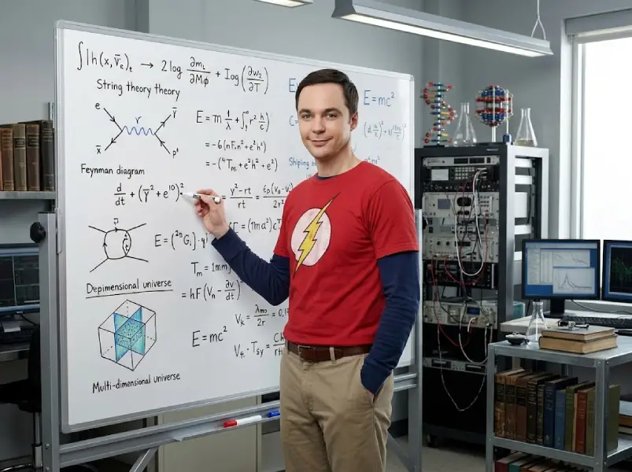
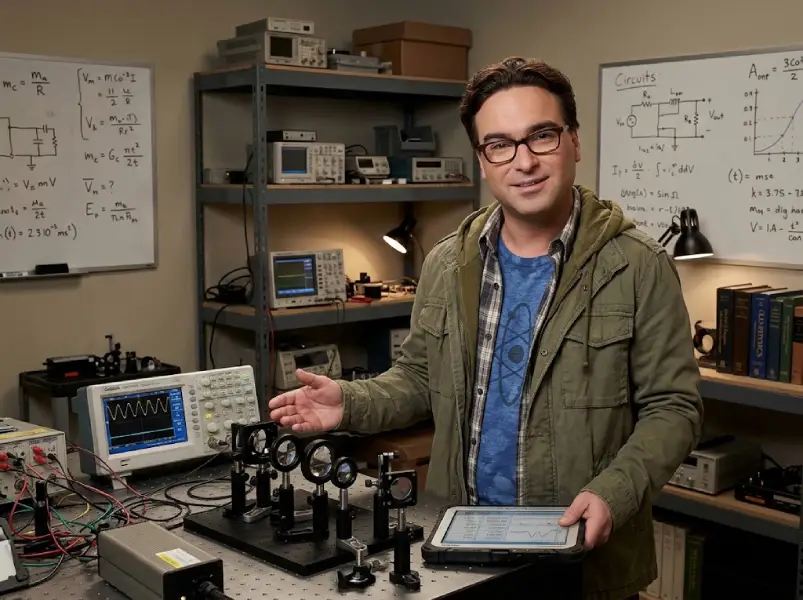
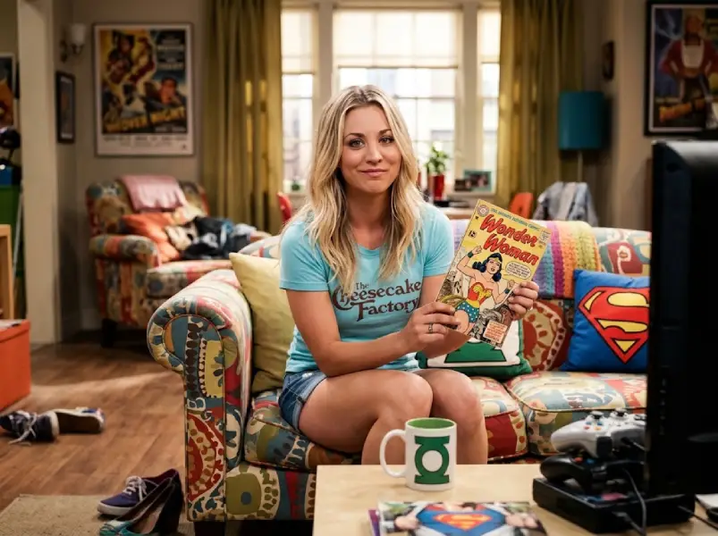
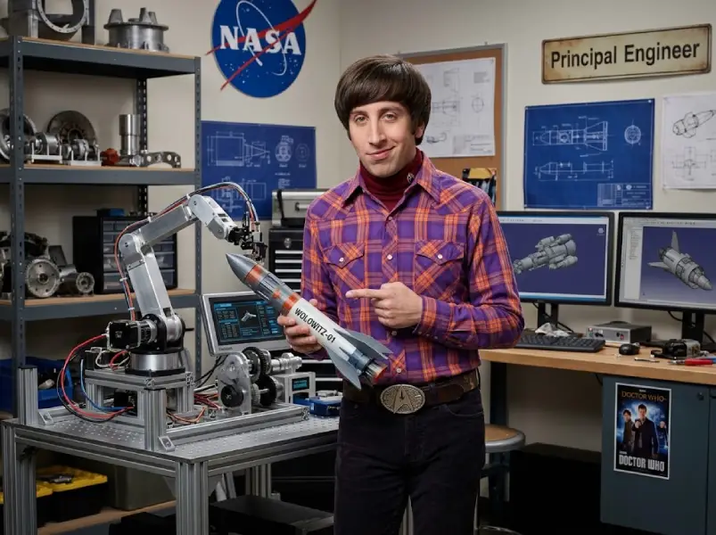
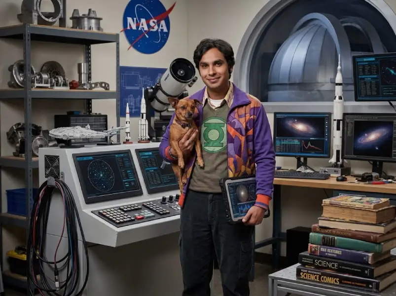
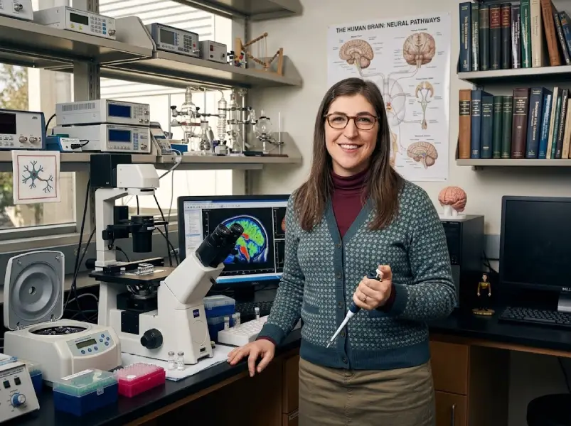
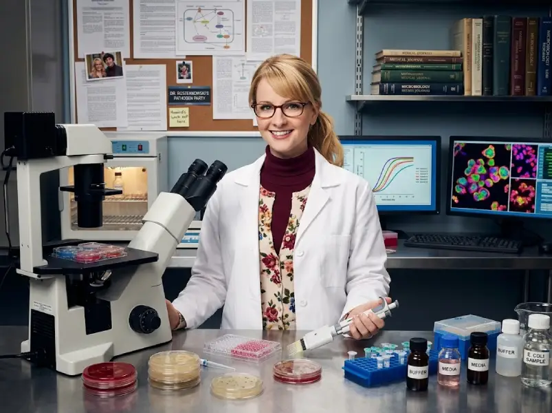

Los sujetos de prueba
Personajes de The Big Bang Theory
Siete personas, cuatro doctorados y una dinámica social fascinante. Deslizá para recorrerlos y abrí cada ficha.
-

Dr. Sheldon Cooper
Físico teórico
Dos doctorados, un lugar innegociable en el sofá y una opinión sobre todo. Nadie le gana una discusión, aunque no tenga razón.
- Especialidad
- Teoría de cuerdas
- Manía
- Golpea la puerta tres veces. Siempre.
- Debilidad
- Los trenes a vapor
-

Dr. Leonard Hofstadter
Físico experimental
El pegamento social del grupo y quien siempre atiende la puerta. Convivir con Sheldon durante años ya cuenta como logro científico.
- Especialidad
- Física láser aplicada
- Instrumento
- Violonchelo
- Debilidad
- Intolerante a la lactosa, igual come helado
-

Penny
Actriz y representante farmacéutica
Llegó a Pasadena soñando con actuar y terminó traduciendo el mundo real para sus vecinos científicos. Es el sentido común del grupo.
- Origen
- Omaha, Nebraska
- Trabajo previo
- Camarera en Cheesecake Factory
- Superpoder
- Sentido común
-

Howard Wolowitz
Ingeniero aeroespacial
El único del grupo que viajó al espacio, y no deja que nadie lo olvide. Diseña equipos para la NASA y colecciona hebillas imposibles.
- Título
- Máster del MIT, sin doctorado
- Logro
- Misión a la Estación Espacial Internacional
- Marca registrada
- Hebillas de cinturón imposibles
-

Dr. Rajesh Koothrappali
Astrofísico
Descubrió un objeto más allá de Neptuno y llora con las comedias románticas. Durante años no pudo hablarle a una mujer sin tomar algo.
- Especialidad
- Objetos del cinturón de Kuiper
- Compañera
- Cinnamon, su yorkshire
- Origen
- Nueva Delhi, India
-

Dra. Amy Farrah Fowler
Neurobióloga
Estudia el cerebro humano de día y la mente de Sheldon el resto del tiempo. Conoció al amor de su vida gracias a una app de citas.
- Especialidad
- Neurobiología cognitiva
- Instrumento
- Arpa
- Dato
- Conoció a Sheldon por una app de citas
-

Dra. Bernadette Rostenkowski
Microbióloga
Manipula patógenos mortales en un laboratorio farmacéutico y es, por lejos, la más temida del grupo. Su voz dulce engaña a todos.
- Especialidad
- Microbiología farmacéutica
- Dato
- Gana bastante más que Howard
- Advertencia
- No le levantes la voz